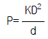
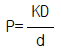
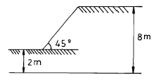
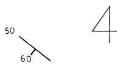

화약취급기능사 (2001-10-14 기출문제)
1과목: 화약 및 발파
1. 기존 암석의 틈을 따라 관입한 판상의 화성암체를 말 하는 것은?
- 암상
- 암주
- 암맥
- 암경
(정답률: 알수없음)

2. 다음 설명중 틀린 것은?
- 발파로 인하여 발생하는 에너지 중에는 탄성파로 변환되어 발파진동으로 소비된다.
- 지반진동은 변위,입자속도,가속도의 3성분과 주파수로 표시된다.
- 발파에 의한 지반진동은 수직방향, 진행방향, 접선방향으로 이루어진다.
- 발파진동에 대한 인체의 반응에서 5.0㎝/sec 정도가 되면 불쾌감을 느낀다.
(정답률: 알수없음)
3. 풀민산수은(II)이 폭발하면 일산화탄소가 생성되는데 이것을 막기 위해 무엇을 배합해 주는가?
- 염소산칼륨(KClO3)
- 질산칼륨(KNO3)
- 질산바륨(Ba(NO3)2)
- 수산화암모늄(NH4OH)
(정답률: 알수없음)
4. 어느 암석에 대한 평가결과 단축압축강도가 1000Kg/cm2이고 R.Q.D 40∼50%정도이면 암질상태는?
- 보통
- 나쁨
- 좋음
- 매우 좋음
(정답률: 알수없음)
5. 다음중 석재나 괴탄을 얻기 위한 발파에 가장 이상적인 폭약은?
- 추진력이 크고 비중이 적은 폭약
- 폭속이 빠르고 맹도가 큰 폭약
- 순폭도가 큰 고급 폭약
- 비중이 크고 폭속이 빠른 폭약
(정답률: 알수없음)
6. 조립 현무암의 성분광물이 다소 변화하여 녹색을 띄는 암석은 다음중 어느 것인가?
- 휘록암
- 섬록암
- 섬록반암
- 조면암
(정답률: 알수없음)
7. 기초지반의 두께가 작고 성토층이 여러층인 경우에 발생하는 유한 사면파괴중 하나는 어느 것인가?
- 사면외 파괴
- 사면내 파괴
- 사면선단 파괴
- 저부 파괴
(정답률: 알수없음)
8. 지표에 나타난 심성암체의 면적이 200km2이하이면 무엇이라 하는가?
- 암경(岩頸)
- 병반(餠盤)
- 암상(岩床)
- 암주(岩株)
(정답률: 알수없음)
9. 장전에는 나무로 만든 다짐대를 사용하여 장전 비중이 커지도록 폭약을 압입한다. 이때 폭약의 동적효과를 나타내는 폭굉압 P는? (단, k = 상수, d = 장전비중, D = 폭속)

- P=KdD
- P=KdD2

(정답률: 알수없음)
10. 현정질인 화성암을 광물학적으로 분류할 때 기준이 될 수 있는 것과 거리가 먼 것은?
- 석영의 존재 유무
- 방해석의 존재 유무
- 장석의 종류와 양적비
- 유색광물(고철질광물)의 종류
(정답률: 알수없음)
11. 사면파괴가 일어나는 원인중 흙의 전단강도를 감소시키는 요인에 해당되는 것은?
- 건물, 물, 눈과 같은 외력의 작용
- 굴착에 의한 흙의 일부의 제거
- 지진, 폭파 등에 의한 진동
- 수분증가에 의한 점토의 팽창
(정답률: 알수없음)
12. 냄새가 없고 흰색의 결정으로 아세톤에만 녹으며 열에대해서 안전한 것은?(단, 폭발열은 1460kcal/kg 정도임)
- 헥소오겐
- 트리니트로 톨루엔
- 피크린산
- 펜트리트
(정답률: 알수없음)
13. 구멍지름 32mm의 발파공을 공간격 9㎝로 하여 3공을 집중발파하였을 때 저항선의 비는? (단, 장약길이는 구멍지름의 12배로 한다.)
- 1
- 1.9
- 2.4
- 2.9
(정답률: 알수없음)
14. 다음중 화학적 풍화에 대한 화성암의 조암광물로 안정성이 가장 큰 것은?
- 감람석
- 흑운모
- 석영
- 휘석
(정답률: 알수없음)
15. 근원지에서 멀리 떨어진 하천의 하류에서 형성된 쇄설성 퇴적암이 갖는 특징이 아닌 것은?
- 분급이 양호하다.
- 장석을 많이 함유한다.
- 퇴적물 입자들의 원마도가 양호하다.
- 주성분 광물은 석영이다.
(정답률: 알수없음)
16. 쇄설성 퇴적물 중에서 φ(척도 scale)의 값이 –1∼-4에 해당되는 입자는?
- 자갈
- 모래
- 실트
- 점토
(정답률: 알수없음)
17. 질산에스텔 및 이를 함유한 화약 또는 폭약중 제조일로부터 2년이 된 것은 어떻게 하여야 하는가?
- 2년 마다 내열시험
- 1년 마다 내열시험
- 6월 마다 내열시험
- 3월 마다 내열시험
(정답률: 알수없음)
18. 다음중 한반도에서 아직 발견되지 않고 있는 것은?
- 제삼기
- 데본기
- 대동기
- 평안기
(정답률: 알수없음)
19. 쥐라기 말기에 한반도의 지질시대중 가장 강력한 조산운동과 큰 규모의 화성활성이 있었다. 이를 무엇이라 하는가?
- 송림운동
- 연일운동
- 불국사운동
- 대보조산운동
(정답률: 알수없음)
20. 다음중 발열제에 속하는 것은?
- DNN
- Al
- NaCl
- DDNP
(정답률: 알수없음)
2과목: 화약류 안전관리 관계 법규
21. 다음 심빼기 발파에서 평행공 심발법에 해당하는 것은 어느 것인가?
- 노르웨이 심빼기
- 부채살 심빼기
- 코로만트 심빼기
- 피라미드 심빼기
(정답률: 알수없음)
22. 화성암에 관한 설명이다. 이중 틀린 것은?
- 지표에 분포율은 약 75%를 차지한다.
- 마그마가 지표에 분출하거나 관입하여 생성된다.
- 마그마가 굳어질때의 화학조성에 따라 종류가 결정된다.
- 마그마가 굳는 속도에 따라 입자의 크기가 다르다.
(정답률: 알수없음)
23. 니트로 글리세린의 산소평형은 다음과 같다. C3H5N3O9 → 3CO2 + 2.5H2O + 1.5N2 + 0.25O2 니트로 글리세린 1몰(227.1g)의 산소평형값은?
- -0.740
- +0.001
- +0.017
- +0.035
(정답률: 알수없음)
24. 저장중인 다이나마이트의 약포에서 니트로 글리세린이 상자표면 및 바닥에 흘러 나왔다면 분해, 제거 할 때 사용하지 않는 것은?
- 식물유제
- 알콜
- 가성소다
- 물
(정답률: 알수없음)
25. 어떤 암석이 변성작용을 받으면 천매암이 된다. 그 원암은 다음중 어느것 인가?
- 규암
- 사문암
- 석회암
- 응회암
(정답률: 알수없음)
26. 화약류 취급에 관한 설명 중 잘못된 것은?
- 사용에 적합하지 아니한 화약류는 화약류 저장소에 반납할것
- 얼어서 굳어진 다이너마이트는 손으로 주물러서 부드럽게 할것
- 낙뢰의 위험이 있을때는 전기도화선 사용을 금할것
- 화약, 폭약과 화공품은 각각 다른 용기에 넣어 취급할것
(정답률: 알수없음)
27. 다음 화약류중 발화점이 가장 높은 것은?
- 헥소겐
- T.N.T
- 피크르산
- 아지화납
(정답률: 알수없음)
28. 다음은 화약류 및 발파에 관한 설명이다. 잘못된 것은?
- 교질 다이너마이트 동결온도는 8℃ 이다.
- 뇌관의 납판시험에 사용되는 납판두께는 4mm 이다.
- 발파계수(c)는암석계수,전색계수,폭약계수와 관련이 깊다.
- 안내판에 따라 천공하는 심빼기 발파는 번컷트 (Burn Cut)법이다.
(정답률: 알수없음)
29. 지하 암반의 동압 생성원인에 대한 설명중 가장 관계 없는 것은?
- 발파에 의한 충격작용
- 지각변동에 의한 압력작용
- 정지된 물체로 부터 받는 압력
- 공동 발생에 의한 지압의 불균형
(정답률: 알수없음)
30. 화성암의 분류중 석리에 따르면 굵은 알갱이이며 완정질이고 색깔에 따라 분류할 때는 어두운 색인 것은?
- 화산암과 산성암
- 심성암과 산성암
- 심성암과 염기성암
- 반심성암과 중성암
(정답률: 알수없음)
31. 화성암의 주성분 광물중에서 고용체가 아닌 것으로 화학성분이 SiO2 인 것은?
- 석영
- 정장석
- 흑운모
- 각섬석
(정답률: 알수없음)
32. 다음중 유기적 퇴적암이 아닌 것은?
- 석탄
- 석회암
- 각력암
- 규조토
(정답률: 알수없음)
33. 습곡의 단면에서 구부러진 모양의 정상부를 무엇이라 하는가?
- 윙
- 향사
- 배사
- 향사축
(정답률: 알수없음)
34. 화약류의 정체 및 저장에 있어 폭약 1톤에 해당하는 화공품의 수량으로서 옳은 것은?
- 실탄 또는 공포탄 300만개
- 공업용뇌관 150만개
- 전기뇌관 200만개
- 총용뇌관 250만개
(정답률: 알수없음)
35. 발파작업시 대피장소로서 적당하지 않는 것은?
- 폭파로 인한 파석이 날아오지 않는 곳
- 경계원으로 부터 연락을 받을 수 있는 곳
- 폭음소리가 들리지 않는 안전한 장소
- 폭파의 진동으로 천반이나 측벽이 무너지지 않는 곳
(정답률: 알수없음)
36. 농경 및 수목의 뿌리제거 발파에 가장 많이 사용되는 법은?
- V cut
- 붙이기법
- 사혈법
- 외부장약법
(정답률: 알수없음)
37. 셰일이 접촉 변성작용에 의해 생성된 암석은?
- 호온펠스
- 규암
- 대리암
- 슬레이트
(정답률: 알수없음)
38. 화약류 폐기의 기술상의 기준중 도화선의 처리방법은?
- 연소처리 하거나 물에 적셔서 분해처리 한다.
- 땅속에 묻는다.
- 공업용 뇌관 또는 전기 뇌관으로 폭발시킨다.
- 수용액으로 하여 강물에 흘려 버린다.
(정답률: 알수없음)
39. 지하에 설치하는 3급 저장소의 위치, 구조및 설비 기준에 대하여 틀린 것은?
- 윗지반의 두께가 60cm 이상인 곳에 설치
- 저장소 내부는 판자로 할 것
- 폭약과 화공품을 동시에 저장하기 위한 격벽의 두께는 20cm이상으로 할 것
- 저장소로 통하는 터널의 입구앞 5m이내에 흙둑을 쌓는등 직접적인 폭발영향을 받지 않도록 할 것
(정답률: 알수없음)
40. 화약류의 사용지를 관할하는 경찰서장의 사용허가를 받지 아니하고 발파 또는 연소시킬 경우의 처벌내용은? (단, 광업법에 의한 경우 제외)
- 5년이하의 징역 또는 1천만원이하의 벌금형
- 5년이하의 징역 또는 500만원이하의 벌금형
- 3년이하의 징역 또는 300만원이하의 벌금형
- 3년이하의 징역 또는 500만원이하의 벌금형
(정답률: 알수없음)
3과목: 암석 및 지질
41. 화약류 양수허가의 유효 기간은?
- 3개월을 초과할 수 없다.
- 6개월을 초과할 수 없다.
- 1년을 초과할 수 없다.
- 2년을 초과할 수 없다.
(정답률: 알수없음)
42. 우리나라의 지형과 지질은 물론 지질구조에 있어서도 남과 북이 현저한 차이를 나타낸다. 이러한 차이는 어느 지역을 경계로 나타나는가?
- 태백산맥
- 추가령열곡
- 차령산맥
- 길주-명천지구대
(정답률: 알수없음)
43. 화약류의 운반신고를 하지 아니하거나 거짓으로 신고한사람의 처벌중 맞는 것은?
- 1년이하의 징역
- 500만원 이하의 벌금형
- 100만원 이하의 벌금형
- 300만원 이하의 과태료
(정답률: 알수없음)
44. 화성암의 구조중 색을 달리하는 광물들이 층상으로 번갈아 나타나거나 석리의 차로 만들어지는 평행구조를 말하는 것은?
- 유문상구조
- 행인상구조
- 호상구조
- 구과상구조
(정답률: 알수없음)
45. 석회암이나 돌로마이트는 압력과 열의 작용으로 방해석의 결정들의 집합체인 결정질 석회암으로 변성된다. 이와 가장 관련이 깊은 암석은?
- 점판암
- 대리암
- 편마암
- 응회암
(정답률: 알수없음)
46. 어떤 암석층에 대한 폭파시험에서 700g으로 누두공이 n=1.2가 되었다고 하면, 동일 암석층에서 같은 최소저항선으로 n=1인 폭파누두공이 되도록 하기 위한 표준장약량은?
- 395.19gr
- 425.11gr
- 457.82gr
- 506.12gr
(정답률: 알수없음)
47. 퇴적암중 수성쇄설암에 속하지 않는 것은?
- 역암
- 각력암
- 사암
- 응회암
(정답률: 알수없음)
48. 다음과 같은 단순사면의 경우 심도계수는?

- 1.33
- 2.35
- 3.37
- 4.39
(정답률: 알수없음)
49. 변성암에서 바늘 모양의 광물이나 주상의 광물이 한 방향으로 평행하게 배열되어 나타나는 구조를 무엇이라 하는가?
- 선구조(lineation)
- 편마구조(gneissosity)
- 편리구조(schistosity)
- 벽개구조(cleavage)
(정답률: 알수없음)
50. 다음 중 석회암, 규암에서 생기는 절리는?
- 방상절리
- 불규칙절리
- 판상절리
- 주상절리
(정답률: 알수없음)
51. 갱도굴착 단면적이 20m2이고, 천공길이가 2m, 폭약위력계수 1.0, 암석항력계수 1.0, 전색계수 1.0인 조건에서 암석터널을 굴진하려고 할 때 단위 부피당 폭약량 (Kg/m3)은? (단, 1발파당 굴진장을 천공장의 90%로 본다.)
- 0.59
- 1.00
- 1.16
- 2.88
(정답률: 알수없음)
52. 비전기식 뇌관의 특징이 잘못된 것은?
- 튜브의 연결작업이 빠르다.
- 정전기, 미주전류에 안전하다.
- 내수성이 좋고 시차 조절이 용이하다.
- 저항값 및 불발뇌관 확인이 쉽다.
(정답률: 알수없음)
53. 지하 1급 저장소의 지반 두께가 24m 일때 폭약은 얼마까지 저장 할수 있는가?
- 40톤 이하
- 35톤 이하
- 25톤 이하
- 17톤 이하
(정답률: 알수없음)
54. 전기감도를 알고자 할 때 사람몸의 정전용량 평균값은?
- 0.001[㎌]
- 0.003[㎌]
- 0.0003[㎌]
- 0.0006[㎌]
(정답률: 알수없음)
55. 다음 화약류를 용도에 의해 분류할때 전폭약에 해당되는것은?
- 테트릴
- 다이너마이트
- 무연화약
- TNT
(정답률: 알수없음)
56. 지질도에 그림과 같이 부호가 표기 되어 있다. 주향과 경사는 얼마인가?

- N50E, 60WS
- N50W, 60ES
- N50E, 60ES
- N50W, 60WS
(정답률: 알수없음)
57. 지하수가 이동 할 때에는 퇴적작용 보다 침식작용이 더 현저하게 일어난다. 그것은 지하수에 어느것이 들어있어 암석을 용해하기 때문인가?
- 이산화탄소(CO2)
- 이황화탄소(CS2)
- 이산화황(SO2)
- 이산화망간(MnO2)
(정답률: 알수없음)
58. 배사와 향사가 반복되는 경우 습곡축면과 윙(wing)이 같은 방향으로 거의 평행하게 기울어진 습곡은?
- 정습곡
- 경사습곡
- 등사습곡
- 침강습곡
(정답률: 알수없음)
59. 페놀에 황산과 질산을 작용시켜 만든 것은?
- 피크르산
- 펜트리트
- 테트릴
- 풀민산수은
(정답률: 알수없음)
60. 다음 사항은 라인드릴링(line-drilling)법에 대한 특징이다. 내용이 틀린 것은?
- 이 방법은 발파에 의하여 파단면을 만드는 것이 아니고 착암기로 파단면을 만드는 것이다.
- 벽면 암반의 파손이 적으나 많은 천공이 필요하므로 천공비가 많이 든다.
- 천공은 수직으로 같은 간격으로 하여야 하므로 천공기술이 필요하다.
- 이방성이 심한 암반구조에 적용되는 방법이다.
(정답률: 알수없음)